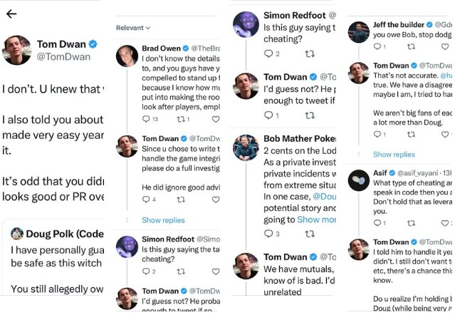

Tournaments · Texas Poker
Jesse J Wins the Trailblazer Kick Off: Stop 2 Opens With a 347-Entry Field at TCH Dallas
347 entries. A $114,510 prize pool. Jesse J takes the title after a heads-up deal with Natalia.
Shomari Williams · October 9, 2026
Published reporting and tournament results from The Sham Report.
347 entries. A $114,510 prize pool. Jesse J takes the title after a heads-up deal with Natalia.
Shomari Williams · October 9, 2026

A day after the raid, Tom Dwan jumped into a tense Twitter thread with Brad Owen, Doug Polk, and others — and the story started splitting into two different versions.
Shomari Williams · March 12, 2026

My first reaction when news broke that TABC raided The Lodge in Round Rock — before any official statement or confirmed details.
Shomari Williams · March 11, 2026